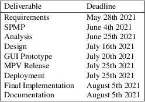
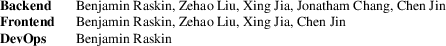
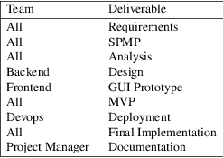
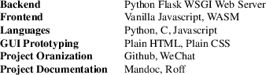

Benjamin Raskin, Student No. 180312330
Chen Jin, Student No. 170631720
Xing Jia, Student No. 180164170
Huiqiao Yang, Student No. 186803710
Yongtai Yang, Student No. 190624980
Mengyuan Liu, Student No. 186802750
Zehao Liu, Student No. 193074000
Ning Nan, Student No. 193064800
Tony Yoon, Student No. 170475670
Shaojun Zheng, Student No. 190665650
Ruicheng Zhao, Student No. 190519490
Wilfrid Laurier University
Gomoku is an web based implementation of the classic Gomoku game. See the requirements document for details on project as well as Gomokue game.

NOTE QA and testing will be done in conjuction with all implementation tasks (GUI, MVP, final implementation).
|
• |
https://bohr.wlu.ca/cp317/shout/SPMP-master/ Shout! Sample SPMP | |
|
• |
https://bohr.wlu.ca/cp317/project.php CP317 Project Deadlines |
The project will be divided into three parts
|
• |
Backend Backend devlopment | |
|
• |
Frontend Frontend develpment | |
|
• |
DevOps Deployment and infrastructure maintanance |
Each project effort will be given a team. The team distribution is as follows:

Each team will be required to complete some deliverable. Some deliverables such as SPMP and requirements will be marked as all, that is all teams must contribute to the deliverable. Some deliveables such as documentation will be marked as PM, that is the project manager will be the one contributing. The deliverable responsibility distribution is as follows:

The main objetive is to develop the Gomoku application. Our goal is to have all necessary feature implemented by the MVP stage of the project, and any bugs/issues completely ironed out by the final implementation stage of the project.
The following principles will be followed while developing Gomoku to speed up the develpment process and reduce manegerial overhead:
|
• |
Optimize as soon as a feature is done | |
|
• |
Upon finding a bug fix it | |
|
• |
Don’t let serious bugs/hacks/issues sit unresolved. |
Majority of the work will be done through Github. Github provides both a version control environment to share changes in the project as well as a convinent interface for organizing feature development as well as an issue ticket board.
Group organizations, meeting scheduling, and general discussion is done through WeChat IM softeware.
Each team will be assigned a particular section of the projects according to their responsibilities; backend team will work on backend related tasks, frontend team will work on frontend related tasks, devops team will work on devops related tasks. All teams will be required to work on some tasks, such as manegerial and documentation tasks.
Each team will work according to the scehdule outlined in prior sections. All teams must complete their specific task prior to or at the given deadline.
